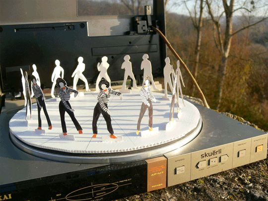
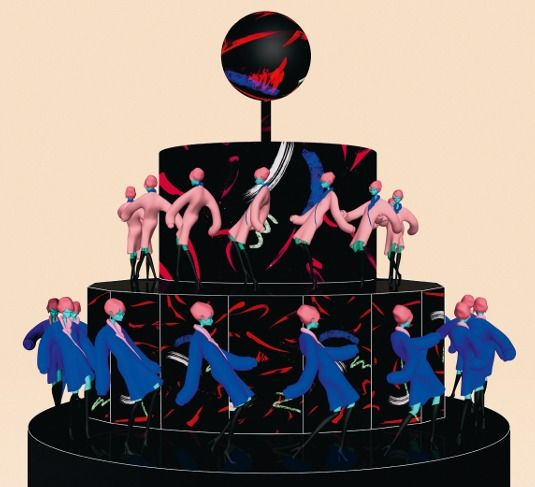
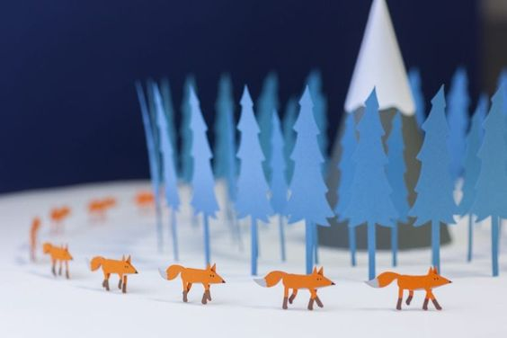
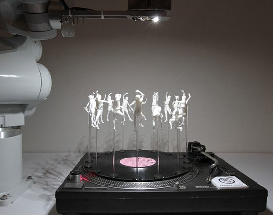
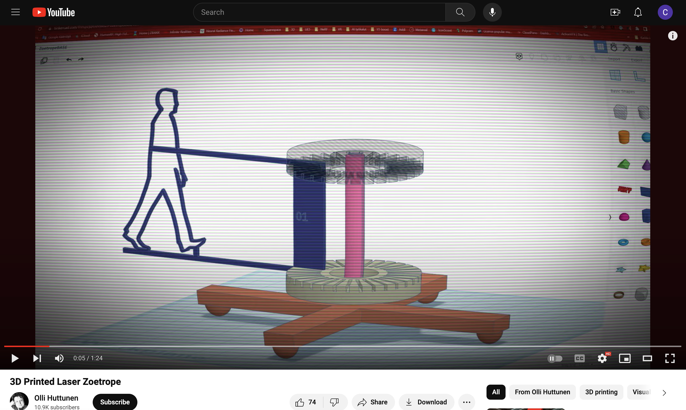
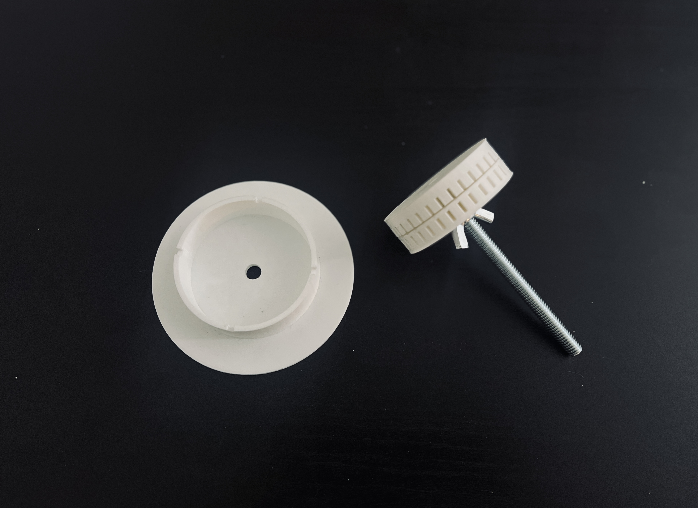
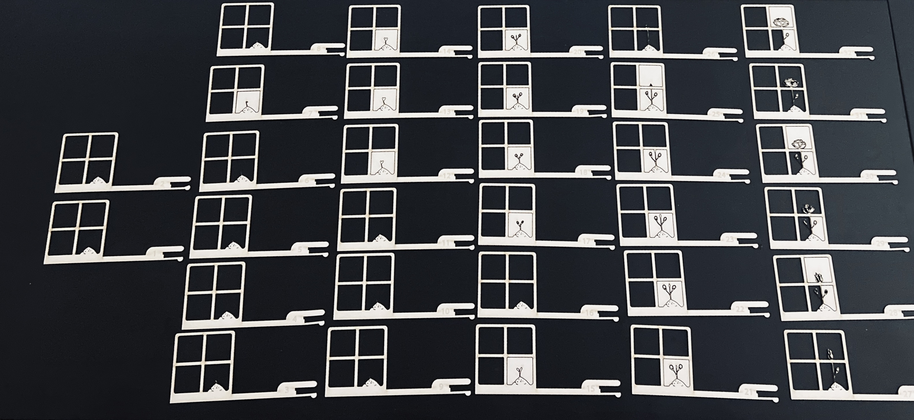
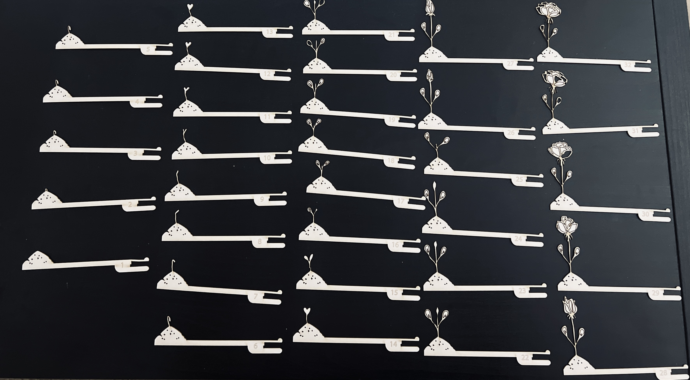
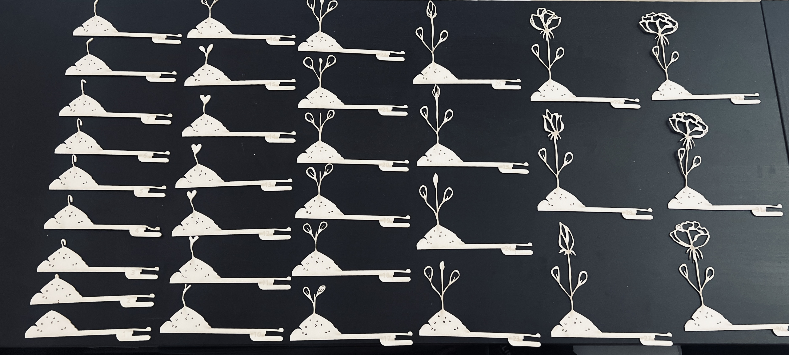
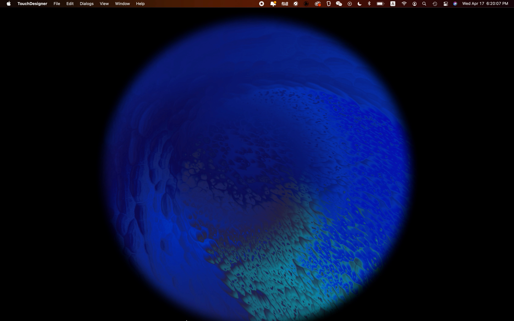

SPRING24_Project Four_Personal Project
Concept and Ideation
Based on the exploration in the three project on projection, I woould like to further dive into this area and further explore other possiibilities within the area of projecting digital content onto physical space and create a dialogue between the digital and physical world.


Inspiration
After having a conversation with my professer, I were introduced to an interesting medium called zoetrope. I have look for inspiration on various type of zoetrope. Through research, I have noticed that I could make use of the turnable to create a zoetrope which music would played at the same time of the spinning.
   Then I start my first around of experiment with my idea of creating a moving image of a flower growing up in the perspective of a window frame; meanwhile, there will be a projection of various landscapes as the representation of the outside view of the window.
Making Process
Initially, I were search through the web to find a way to securely attached the zoetrope onto the turnable. Then, on youtube, I find the video by Olli Huttunen, which he create a laser-light zoetrope on turnable.

Making Process_Trial One
Based on his making process, I seek a similar way of attaching the zoetrope. Through 3D printing, I create the base parts for attachment, and through laser-cutting, I create a 32 frames moving image of flower growing up from a window perspective.
👇 click the right image below to view spinning of window frame and growing flower_1.0👇

Making Process_Trial Two
However, the spinning of the image does not look like what I expected. The window frame complete takes over and left the growing of flower movement be complete ignored or can barely viewed. Hence, I decided to abandoned the window frame, and only focus on the growing of the flower.
👇 click the right image below to view spinning of growing flower_1.0 👇

Making Process_Trial Three
Even though, it does look better without the window frame, yet, due to its size, it still quite fragile and hard to tell the form. Therefore, I decided to magnified the size of all 32 frames.
👇 click the right image below to view spinning of growing flower_2.0 👇

In the meantime, I decided to change the projection to a representation of water flowing with its movement react in responed to music. As a symbolization of the digital content as water nurturing the growth of the flower in the physical world.
👇 click the image below to view water flowing generation_on_screen 👇
Description and Display
By scanning through various places in the 950 building, I ended up go back to room M4 and find a spot that suited the display of my work. In this project, I aimed to explore the connection between digital and physical space while trying to create a dialogue between the digital and the physical. In my project, I choose to play the vinyl “cigarette after sex“ by the band "Cigarette After Sex," which the overall tone and feeling of this album matched up with the generation of water flowing. Through the physical input of vinyl playing music, the digital content of water flowing with react to the flow of music, and create a effect of the digital water nurturing the flower, and lead to the growth of flower. In this project, I tried to create a relationship between both digital and physical world, as the physical content_music 'movement' to the digtal content_water flowing, while in exchange, the digital content_water flow proviide 'nutrient' to the physical content_growth of flower.
👇 click the image below to view final display of this project 👇

Click here to return to main page